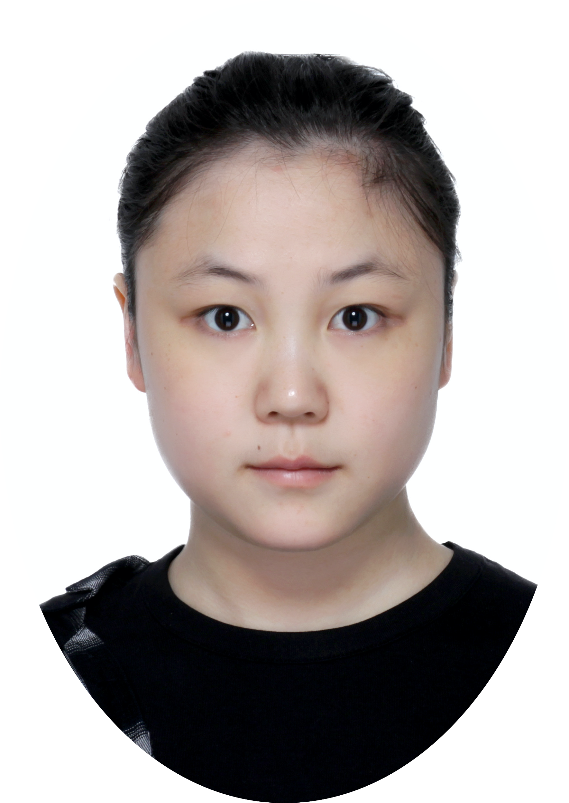

Yihan Ma
About Me
I am a Ph.D. student at CISPA Helmholtz Center for Information Security, co-advised by Prof. Dr. Dr. h. c. Michael Backes and Dr. Yang Zhang. Before that, I received my bachelor's (2018) and master's (2021) degrees from Fudan University. My research primarily focuses on trustworthy AI, with a particular interest in generative models, including both language models and text-to-image models. I am especially interested in exploring how these models can be misused and how to make them more reliable, transparent, and aligned with human values.
Publications
2025
From Meme to Threat: On the Hateful Meme Understanding and Induced Hateful Content Generation in Open-Source Vision Language Models
Yihan Ma, Xinyue Shen, Yiting Qu, Ning Yu, Michael Backes, Savvas Zannettou, Yang Zhang; USENIX Security 2025
[PDF] [Code]
2024
The Death and Life of Great Prompts: Analyzing the Evolution of LLM Prompts from the Structural Perspective
Yihan Ma, Xinyue Shen, Yixin Wu, Boyang Zhang, Michael Backes, Yang Zhang; EMNLP 2024
[PDF]
2023
Generated Graph Detection
Yihan Ma, Zhikun Zhang, Ning Yu, Xinlei He, Michael Backes, Yun Shen, Yang Zhang; ICML 2023
[PDF] [Code]
Generative Watermarking Against Unauthorized Subject-Driven Image Synthesis
Yihan Ma, Zhikun Zhang, Ning Yu, Xinlei He, Michael Backes, Yun Shen, Yang Zhang;
[ARXIV]
2021
DeepPredict: A Zone Preference Prediction System for Online Lodging Platforms
Yihan Ma, Hua Sun, Yang Chen, Jiayun Zhang, Yang Xu, Xin Wang, and Pan Hui; Journal of Social Computing
[PDF]
2019
DeepLoc: A Location Preference Prediction System for Online Lodging Platforms
Yihan Ma, Hua Sun, Yang Chen, Jiayun Zhang, Yang Xu, Xin Wang, and Pan Hui; ChineseCSCW 2019
[PDF]
Education
-
Ph.D. Jul. 2021 – Present CISPA Helmholtz Center for Information Security. Saarland, Germany
-

Master Sep. 2018 – Jan. 2021 Fudan University. Shanghai, China
-
Bachelor Sep. 2014 – Jun. 2018 Fudan University. Shanghai, China
Experience
-
CISPA Helmholtz Center for Information Security. Saarland, Germany
Ph.D. student at CISPA Helmholtz Center for Information Security, co-advised by Prof. Dr. Dr. h. c. Michael Backes and Dr. Yang Zhang. Jul. 2021 – Present
-
Fudan University. Shanghai, China
Research Assistant at the Mobile Systems and Networking (MSN) group, advised by Prof. Yang Chen. Jul. 2017 – Jan. 2021
-

Tsinghua University. Shanghai, China
Research intern at Tsinghua Center of Social Network Research, advised by Prof. Jar-Der Luo (Director of Tsinghua Center of Social Network Research). Jul. 2018 – May 2019